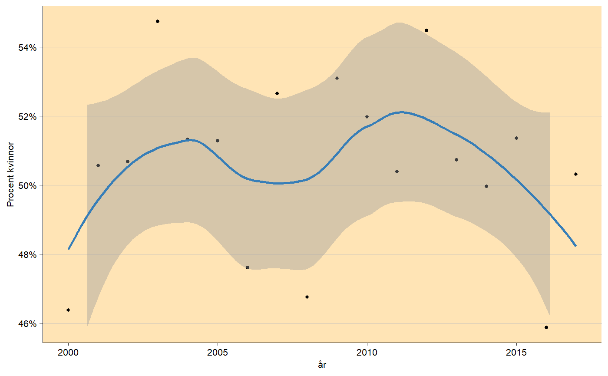

trend_plot.RdSimple function to show trend in percent (y_var) between different years
(x_var) using geom_smooth.
trend_plot(df, x_var, y_var, y_breaks = 5, y_lim = c(54.9, 65.1), x_breaks = 5, y_lab = "Procent kvinnor", x_lab = "år", title = NULL, subtitle = NULL, title_size = 14, subtitle_size = 12, line_color = "#377EB8", line_size = 1, point_size = 1, background_color = "moccasin", panel_grid_color = "grey", panel_grid_size = 0.3, axis_size = 0.3, axis_text_angle = 0, text_size = 8, percent_accuracy = 1)
| df | Data frame. |
|---|---|
| x_var, y_var | X and Y variable. |
| y_breaks | Length between each break on y-axis. |
| y_lim | Limit on y-axis. |
| x_breaks | Length between each break on x-axis. |
| x_lab, y_lab | X and Y-axis labels, use NULL for no label. |
| title | Plot title, NULL for no title. |
| subtitle | Small text under title, NULL for no subtitle. |
| title_size | Text size of title in pt. |
| subtitle_size | Text size of subtitle in pt. |
| line_color | Color of the line. |
| line_size | Size of the line. |
| point_size | Size of the points. |
| background_color | Color of the panel background. |
| panel_grid_color | Color of the panel grid lines. |
| panel_grid_size | Size of the panel grid lines in plot and contour lines around bars, useful to change if large dpi! |
| axis_size | Size of the axis lines. |
| axis_text_angle | Angle of the tick texts, 45 is recommended for many x levels. |
| text_size | Size of the text in pt. |
| percent_accuracy | Set accuracy for |
ggplot object containg trend plot.
# Creating data df <- data.frame(year = 2000:2017, prob = rnorm(18, 0.5, 0.02)) # Trend trend_plot(df, 'year', 'prob', y_breaks = 2, y_lim = range(df$prob) * 100)